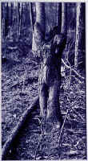

Angela
Black
Blackberries
Seventeen
and picking blackberries again
somewhere in the hot bed of nature,
remembering this old ritual.
As a girl I knew the best way to get them:
I would push the red ropes of hurt away with
my magic backyard wand,
using chubby fingers,
to pluck the black eyeballs from green sockets;
crush their purity beneath my teeth.
Back then, I never washed them off.
The other kids would say,
"Ewww, bugs crawled on that!"
as I tossed another into my purple mouth.
Bugs tasted good and they never made me sick.
The blackberries, bugs and all, seem to agree
that they tasted best ripe and raw
in the hellfire of June heat.
But I'm not nine anymore,
and as I push the plastic sunglasses away from my nose,
the hellfire seems like napalm.
I have no magic backyard wand.
The chubby fingers have become reeds
with rings and thorn cuts-
red mixing with purple.
I carefully check each one for any rogue arthropod,
any flaw where some mother ladybug left her
squirming larva.
I try not to think about it,
but then blackberries aren't all I'm thinking about.
As I bend over, fighting the heat,
a bird moves
and I freeze,
imagining the faceless attacker in the trees.
Alone, waiting to push me into the thorny bushes,
and pluck my blue eyes from the lone red socket,
force my purple mouth open with squirming larva tongue,
and perhaps blow my brains out into the blackberries.
Maybe then, years from now, little girls will remember to wash them off
before eating my memories.
As I leave the choking vines and thorns
I try to get the bitter taste out of my mouth.
Funny
they never tasted so bitter nor lingered so long,
when I was the shiny, blue-eyed girl of nine.
But seventeen takes a lot out of you.
Blackberries sympathize with chubby fingers,
for innocents must eat of the innocent.
But I can only eat of the bugs,
and the fear.
Purity leaves a bad taste in my mouth.
|

(Rebecca Fulmer) |
 ‚Üê Back to MarckBeggs.com | Arkansas Literary Forum archive, preserved as originally published
‚Üê Back to MarckBeggs.com | Arkansas Literary Forum archive, preserved as originally published{kind=link}